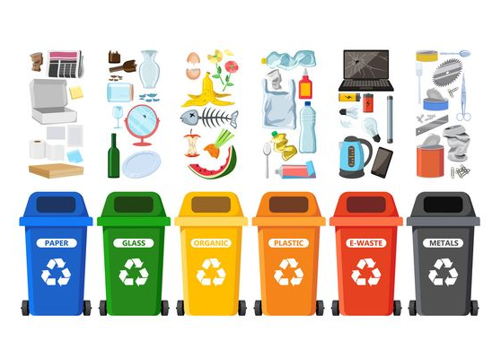
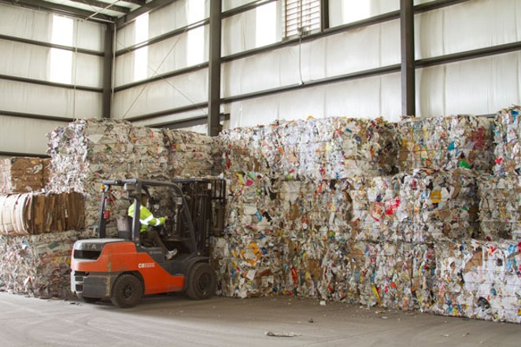
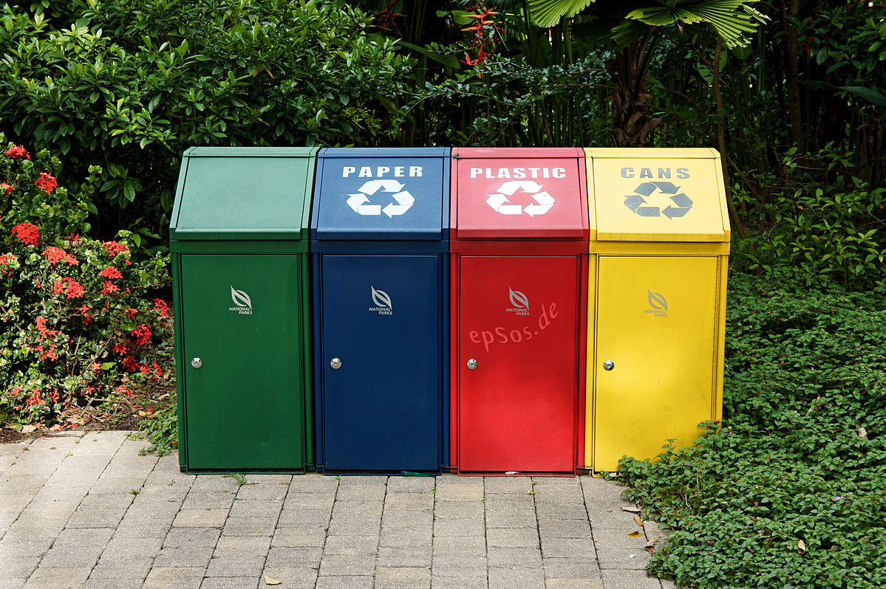

<!-- <p>about us works!</p> -->
<div class="content-wrapper">
    <div class="row">
        <div class="col-md-7">
            <h4>About us</h4>
            <p>We are dedicated to making a positive impact on the environment and our community by providing comprehensive recycling solutions for glass, metal, oil, and textiles. With a firm commitment to sustainability, we have become a trusted partner in the quest to reduce waste and conserve valuable resources.</p>
            <h4 class="sub-heading">Our Mission</h4>
            <p>Our mission is simple yet profound: to promote responsible and environmentally conscious recycling practices that benefit the planet and future generations. We aim to minimize the environmental footprint of businesses and individuals while contributing to a cleaner, greener world.</p>
            <h4 class="sub-heading">What Sets Us Apart</h4>
            <p>Expertise: With years of experience in the recycling industry, we possess the knowledge and skills required to handle various types of recyclable materials effectively and efficiently.</p>
            <p>Innovation: We continuously invest in the latest recycling technologies and techniques, ensuring that we stay at the forefront of sustainable practices.</p>
            <p>Community Engagement: We actively engage with our local community, encouraging everyone to join our mission and adopt eco-friendly recycling habits.</p>
            <p>Environmental Stewardship: Our commitment to environmental stewardship is unwavering. We adhere to the highest environmental standards to ensure responsible disposal and processing of recyclables.</p>
            <h4 class="sub-heading">Our Services</h4>
            <p>Glass Recycling: We collect, separate, and process glass materials, ensuring that they are transformed into new glass products.</p>
            <p>Metal Recycling: From aluminum to steel, we accept various metal items, responsibly processing and recycling them to reduce environmental impact.</p>
            <p>Oil Recycling: We offer a safe and eco-friendly solution for used oil disposal, complying with all regulations and standards.</p>
            <p>Textile Recycling: Our textile recycling program encourages the reuse and repurposing of clothing and textiles, reducing textile waste.</p>
            <h4 class="sub-heading">Join Us in the Recycling Revolution</h4>
            <p>we invite you to be a part of the recycling revolution. Together, we can protect our planet's resources, conserve energy, and create a more sustainable future for all. Whether you're a business owner seeking responsible waste management solutions or an individual looking to make a difference, We are here to help you achieve your recycling goals.</p>
            <p>Join us today and become a partner in the journey towards a cleaner, greener, and more sustainable world.</p>
        </div>
        <div class="col-md-5">
            <div class="recycle-images" style="display: flex;flex-direction: column;">
                <span></span>
                <span></span>
                <span></span>
                <!-- <span></span> -->
                <span></span>
            </div>
        </div>
    </div>
</div>

